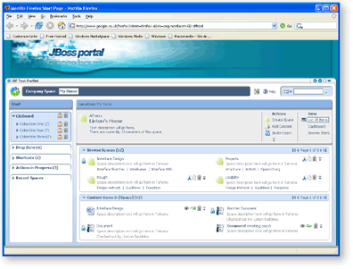
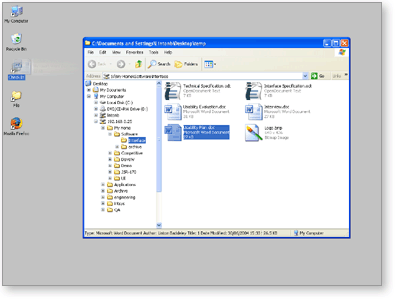

The Alfresco system will evolve significantly over the next few years, but we are focusing on enabling high-value applications that have, in the past, required expensive commercial systems. The Alfresco platform provides a modern content repository, pre-configured portlets that provide application components for common content operations and a set of standards-based APIs. Out of the box, configured or implemented on top of the platform, the Alfresco platform provides the basis for the following solutions.
J2EE-based Professional Portal Projects
Portal projects can be very expensive to implement with commercial software that includes portals. Alfresco content management can manage content for portals and provide search and categorization services for targeted delivery of content within portals. Alfresco implements its portal components using the JSR-168 standard to fit into open source portals such as JBoss Portal 2.0. You can build an entire professional portal without the cost of commercial software using open source.

Alfresco Web User Interface
Controlled Shared Drives
Due to compliance regulations and out-of-control content growth, organizations are seeking to replace shared network drives that have become the dumping ground of enterprises. Users have resisted content management implementations because they are too hard to use. The Alfresco system provides a shared drive interface for the storage of information with automated rules to simplify the categorization and organization of information to improve searching, facilitate sharing through portal interfaces and increase compliance through content control.

Alfresco Desktop File Access
Content-enhanced Applications
ISVs and application developers who wish to enhance their applications, such as CRM or ERP systems, can provide content management and search services in their applications with a low-cost, royalty-free, super-fast content management system. The Alfresco system provides a web service interface so that no matter what language your application is implemented in, you can integrate enterprise-level content management capabilities. The Alfresco LGPL license means that the license status of your code is not affected.
Compliance Applications
With regulations such as Sarbanes-Oxley, the Patriot Act and numerous financial and control rules, even the smallest organizations are affected by the need to control paperwork and documentation. As an open source enterprise content management system, Alfresco provides an affordable alternative for putting controls into place. With easy-to-use shared drive integration, Alfresco provides the easy way to get control of paperwork without adding ever more burden on employees.
Low-cost, Open-source Alternative to Microsoft SharePoint™
If you have been considering using Microsoft SharePoint because it comes free with Windows 2003, think again. In order to use the capabilities of SharePoint to search and use content in a SharePoint repository, you need the added-cost Microsoft SharePoint Portal™. Alfresco provides desktop integration, portal access and easy-to-use interfaces and programming interfaces with integration to production open source portal products that give you an all-encompassing portal and content management solution without any license fees.
|